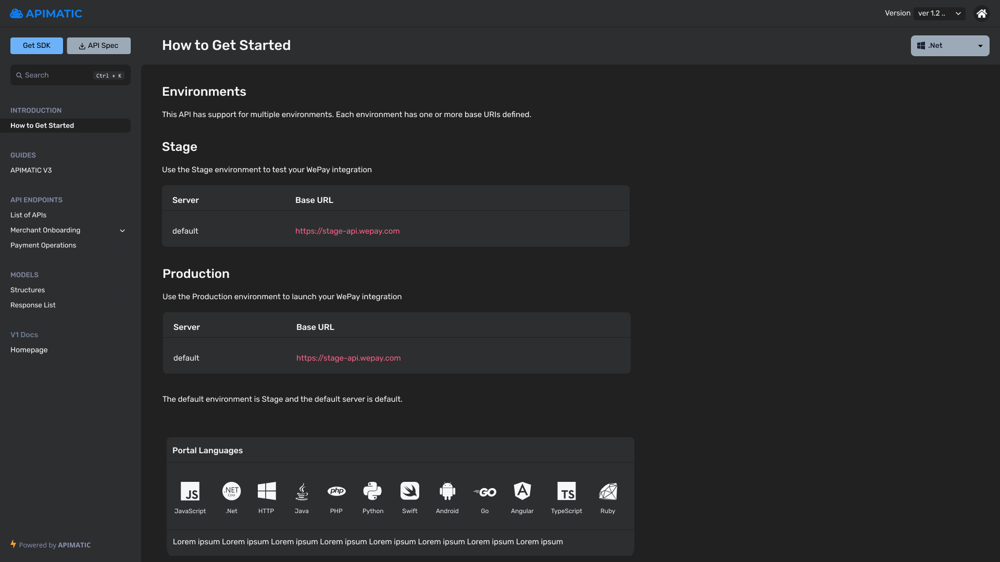
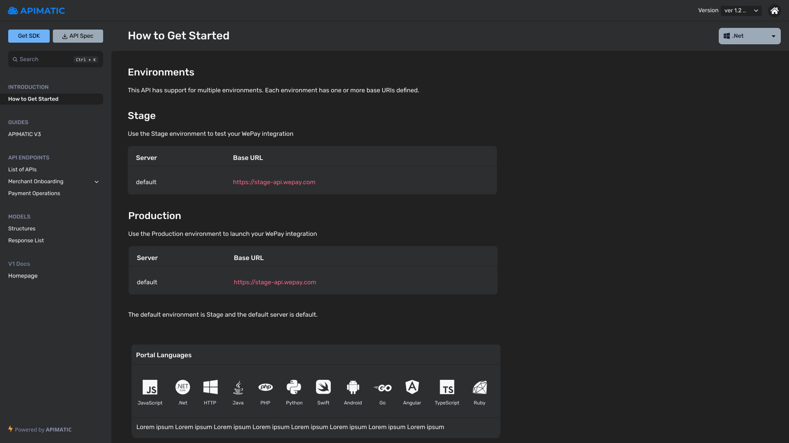

Enhancing APIMatic product's user experience by creating frictionless features while improving the developer experience in API space
APIMatic is a Developer Experience platform for APIs. Our product's ultimate goal is making developers more productive through automatic code generation and a tool that provides a complete set of DX components such as auto generated SDKs, API portal, API docs, live code samples and more. I am responsible for the product design improvements and removing frictions in the product for our users so they will get optimal user experience
- MY ROLE
- User Research
- Journey Mapping
- Wireframing
- Interaction Design
- Screen Flows
- Visual Design
- PLATFORMS
- Web (Cloud based)
- YEAR
- 2021-2022
- More Details
- Official Website
Problem
Many users had reported issues while using our product in terms of user experience and usability problems through user research.
Key drivers
Users felt confused while using some of available options throughout the product and sometimes they reported they are unable to discover flows and components.
- User's feedback
- We gathered data directly from the users via feedback with the customer success team which helped us to extract insights from the users.
- Insight tools
- A solid way which helped us to understand pain-points of users through different tools like MixPanel, Google Analytics and Clarity etc.
- Competitive analysis
- A detailed analysis of competitors that how they handled the specific use case and how it can be improved further.
- Journey mapping
- This method helped us to understand the flow of users which gave us helpful insights.
Learning about our users
User experience of our users are on highest priority because if any experience is broken, they will get frustrated and to understand their pain problems, I dig in to the insights and numbers through different tools.
With the Mixpanel tool, I extracted flows and usage of different users through funnels and cohorts. This method can extract anything according to the user's flow and use-case. The numbers helped our team to understand the core issue and finding opportunities on different stages.

For further testing some options, we used Clarity tool by Microsoft which helped us by providing deeper understanding of user behavior, their pain points and what users are looking for. They have very useful tools such as session replays, see where people get stuck or where they are highly engaged. Also it helped us in utilizing user research and A/B experimentation.


Journey mapping
Based upon the data gathered from in-person feedbacks, surveys and reviews, I structured my data on journey map. This helped me identify pain points and areas for improvement throughout the journey. It also helped me initialize discussions to understand knowledge gaps and idea generation between team and stakeholders.

Design system
For a single source of truth, design system was created and managed so that will allow the teams to design, collaborate, realize and enhance the product. Started from basic design system to evolving and updating it time to time.


DX Analytics
DX Analytics is a unique tool which was in-house designed by the engineering and design team. It helps users to analyze how their API documentation is performing through the DX Analytics dashboard for metrics like API Portal page visits, SDK downloads, time to first Hello World, and much more. We implemented all the required insights for the users with the help of user research.
Email journeys
Whenever a user signs up at APIMatic website, they go through a quick walkthrough but most of the users skip that step to taste the product at a quick pace. So the design team worked with the content team and created different email journeys where users will get customized emails according to their usage and flows so they can learn more about the product according to their path. For this setup, we used Autopilot journeys and created all user flows with customized guides and featured emails.

Project Titan 1.1 (Docs Editor)
Multiple features were improved in the product and one of the core areas is Docs Editor where I spent 100+ hours sketching many ideas and brainstorming various ways with my team. We created low-fidelity wireframes and prototypes to test with users and internal teams. There were multiple features starting from improving existing flows and user experience.


DX Portal (v3)
DX Portal or Developer Experience Portal is an all-in-one, no-code developer experience portal containing language-specific API documentation, dynamic code samples, live authenticated API calls in a real-time API playground, downloadable SDKs in all languages, and more. I improved its user experience with the engineering team to reduce frictions and also added multiple new features through countless hours of wireframing, mockups and user testing.
 


API Validator
APIMatic tool performs some preliminary checks on the user-provided API specification document to ensure that it meets the basic requirements for generating a valid output during SDK and Portal generation. For that, our transformer team enhanced its capability from basic check to advanced controlled product, in which users can make quick changes in more controlled ways before proceeding. I led its first class concept via wireframes and created mockups with user flows and features.


APIMatic's official Website & Blog
I completely designed our official website which includes UI Design + CSS + JS via Elementor Plugin in WordPress environment.


SOME of my OTHER mvp work...

SpeekIO Marketing Website
End-to-end UI/UX design with markup writing for Embrace-IT Denmark.

InLogic School Management System Integrated with Microsoft Teams
Complete UI/UX design with markup writing for Inlogic Denmark. Client shared his pin-pointed pain points they were experiencing with the current limited system so I started it directly in markup by using Bootstrap because scope and requirements were clear and straight-forward.

InLogic School Management System Redesigned Portal
Complete UI/UX with markup designed for Inlogic Denmark. Client wanted to upgrade their exisiting portal to new framework and wanted to integrate new components so I designed it using Bootstrap.

EasyBrand Marketing Website
Complete UI/UX with markup designed for EasyBrand (Optimentor) Denmark

EasyBrand Admin Portal
Complete UI/UX with markup designed for EasyBrand (Optimentor) Denmark. Client's requirement and scope was clear and well-defined so I wrote its markup using Bootstrap framework.

EasyBrand Client Portal
Complete UI/UX with markup designed for EasyBrand (Optimentor) Denmark. Client's requirement and scope was clear and defined so I wrote its markup using Bootstrap framework.

Gyldendal Free Order Module
Complete UI/UX design with markup for Gyldendal - Book publisher of Denmark. Client required to add some features in their exisiting portal so I wrote it's markup to support required features.

Gyldendal Order Management Module
UI/UX of order steps and tweaks with markup designed for Gyldendal - Book publisher of Denmark. Client wanted to implement order steps process in their portal so they can show information of the product for their clients. I wrote its markup for the required feature.

Optimentor Marketing Website
Complete UI/UX design with markup for Optimentor Denmark. Client wanted a fresh design of their marketing website so I wrote its markup by using Bootstrap framework.

Knot Game Project (Android & iOS)
I entirely designed all the assets by using Photoshop for the game components. Client wanted a new and fresh look of the game.

Umall App (Android) for Ufone - 2015
UI/UX app design for Ufone Pakistan. Client wanted a simple shopping app for their customers so I designed it by using Photoshop because exporting assets for app were required as well.

Data Anonymyzer
Data anonymyzer app which anonymyze exisitng data according to GDPR policy. I was responsible for UI/UX design at Synergy-IT.